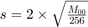
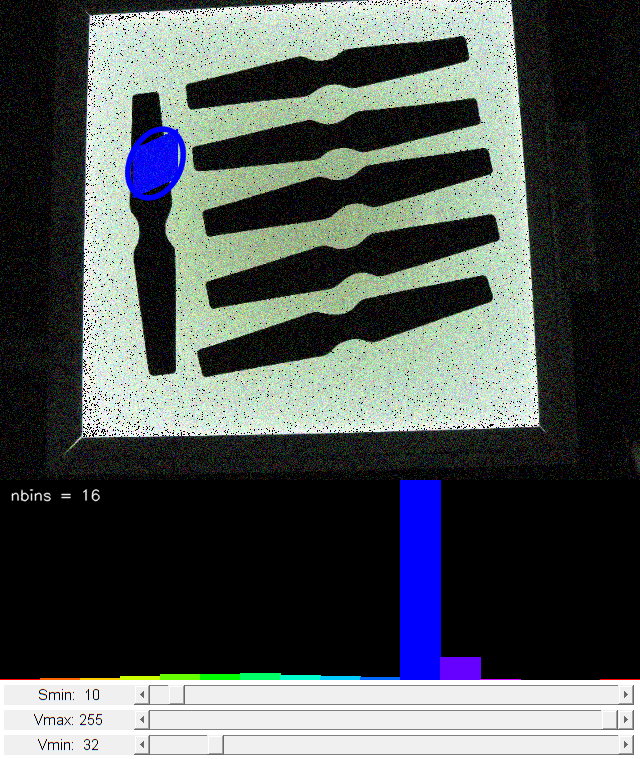

CAMShift
In this demo, we learn about Meanshift and Camshift algorithms to find and track objects in videos.
This is a demo that shows mean-shift based tracking. You select a color objects such as your face and it tracks it. It reads from video camera by default.
Sources:
Contents
Meanshift
The intuition behind the meanshift is simple. Consider you have a set of points. (It can be a pixel distribution like histogram backprojection). You are given a small window (may be a circle) and you have to move that window to the area of maximum pixel density (or maximum number of points). It is illustrated in the simple image given below:

The initial window is shown in blue circle with the name "C1". Its original center is marked in blue rectangle, named "C1_o". But if you find the centroid of the points inside that window, you will get the point "C1_r" (marked in small blue circle) which is the real centroid of window. Surely they don't match. So move your window such that circle of the new window matches with previous centroid. Again find the new centroid. Most probably, it won't match. So move it again, and continue the iterations such that center of window and its centroid falls on the same location (or with a small desired error). So finally what you obtain is a window with maximum pixel distribution. It is marked with green circle, named "C2". As you can see in image, it has maximum number of points. The whole process is demonstrated on a static image below:

So we normally pass the histogram backprojected image and initial target location. When the object moves, obviously the movement is reflected in histogram backprojected image. As a result, meanshift algorithm moves our window to the new location with maximum density.
To use meanshift in OpenCV, first we need to setup the target, find its histogram so that we can backproject the target on each frame for calculation of meanshift. We also need to provide initial location of window. For histogram, only Hue is considered here. Also, to avoid false values due to low light, low light values are discarded using cv.inRange function.
Camshift
There is a problem with the approach described above. The window always has the same size even when the tracked object moves farther away or very close to the camera. That is not good. We need to adapt the window size with size and rotation of the target. Once again, the solution came from "OpenCV Labs" and it is called CAMshift (Continuously Adaptive Meanshift) published by Gary Bradsky in his paper "Computer Vision Face Tracking for Use in a Perceptual User Interface" in 1988.
It applies meanshift first. Once meanshift converges, it updates the size of the window as, . It also calculates the orientation of best fitting ellipse to it. Again it applies the meanshift with new scaled search window and previous window location. The process is continued until required accuracy is met.

In OpenCV, camshift is almost same as meanshift, but it returns a rotated rectangle (that is our result) and box parameters (used to be passed as search window in next iteration).
For additional resources, see:
- French Wikipedia page on Camshift. (The two animations are taken from there)
- Bradski, G.R., "Real time face and object tracking as a component of a perceptual user interface," Applications of Computer Vision, 1998. WACV '98. Proceedings., Fourth IEEE Workshop on , pp.214,219, Oct 1998
Code
function varargout = camshift_demo_gui(varargin)% setup video capture cap = createVideoCapture([], 'cube'); assert(cap.isOpened(), 'Could not initialize capturing'); frame = cap.read(); assert(~isempty(frame) && size(frame,3)==3 && isa(frame,'uint8')); % program state app = appState(); app.sz = size(frame); app.hsz = [200 app.sz(2) 3]; % create the UI, and hook event handlers h = buildGUI(frame, app); opts = {'Interruptible','off', 'BusyAction','cancel'}; set(h.slid, 'Callback',@onChange, opts{:}); set(h.fig, 'WindowKeyPressFcn',@onType, ... 'WindowButtonDownFcn',@onMouseDown, opts{:}); onType([], struct('Key','e')); if nargout > 0, varargout{1} = h; end if nargout > 1, varargout{2} = app; end % main loop while ishghandle(h.fig) % get next frame frame = cap.read(); if isempty(frame), break; end out = frame; % extract hue channel, and range-threshold in HSV colorspace frameHSV = cv.cvtColor(frame, 'RGB2HSV'); hue = frameHSV(:,:,1); mask = cv.inRange(frameHSV, ... [0 app.smin min(app.vmin,app.vmax)], ... [180 255 max(app.vmin,app.vmax)]); mask = uint8(mask * 255); % logical -> uint8 (for bitwise ops) % process mouse selection (during onMouseMove and onMouseUp) if ~isempty(app.rct) && cv.Rect.area(app.rct) > 0 % compute and display hue histogram of selection [app.histo, histimg] = computeHistogram(hue, mask, app.rct, app); set(h.img(1), 'CData',histimg); % highlight selection region out = drawSelection(out, app.rct); end % mask-out output using HSV thresholding result if app.threshView || ~isempty(app.rct) out = cv.bitwise_and(out, uint8(255), 'Mask',mask); end % check if the rectangle selection was fully made if ~isempty(app.win) % clear mouse selection once onMouseUp is triggered app.rct = []; % perform CAMShift to track object using its histogram backproj = cv.calcBackProject(hue, app.histo, {[0 180]}, 'Uniform',true); backproj = cv.bitwise_and(backproj, mask); [rbox, app.win] = cv.CamShift(backproj, app.win, 'Criteria',app.crit); % expand search window if it gets too small if cv.Rect.area(app.win) <= 1 r = (min(app.sz(1:2)) + 5) / 6; app.win = cv.Rect.from2points(app.win(1:2) - r, app.win(1:2) + r); app.win = cv.Rect.intersect(app.win, [0 0 app.sz(2) app.sz(1)]); end % switch to backproject probability instead of frame as output if app.backprojView out = cv.cvtColor(backproj, 'GRAY2RGB'); end % draw location of tracked object out = cv.ellipse(out, rbox, ... 'Color',[0 0 255], 'Thickness',3, 'LineType','AA'); end % show output set(h.img(2), 'CData',out); drawnow limitrate; end cap.release(); % release video source
Callback functions
User draws box around object to track. This triggers CAMShift to start tracking
function onMouseDown(~,~) %ONMOUSEDOWN Event handler for mouse down on figure % start selection onClear(); % clear any previous trackig app.pt0 = getCurrentPoint(h.ax(2)); app.rct = [app.pt0 0 0]; % attach event handlers, and change mouse pointer set(h.fig, 'Pointer','cross', ... 'WindowButtonMotionFcn',@onMouseMove, ... 'WindowButtonUpFcn',@onMouseUp); end function onMouseMove(~,~) %ONMOUSEMOVE Event handler for mouse move on figure % update selection rectangle p = getCurrentPoint(h.ax(2)); app.rct = cv.Rect.from2points(app.pt0, p); app.rct = cv.Rect.intersect(app.rct, [0 0 app.sz(2) app.sz(1)]); end function onMouseUp(~,~) %ONMOUSEUP Event handler for mouse up on figure % detach event handlers, and restore mouse pointer set(h.fig, 'Pointer','arrow', ... 'WindowButtonMotionFcn','', ... 'WindowButtonUpFcn',''); % finish selection app.pt0 = []; if cv.Rect.area(app.rct) > 0 % tracking is now activate in main loop app.win = app.rct; else % ignore selection app.rct = []; end end function onChange(~,~) %ONCHANGE Event handler for UI controls % retrieve current values from UI controls app.vmin = round(get(h.slid(1), 'Value')); app.vmax = round(get(h.slid(2), 'Value')); app.smin = round(get(h.slid(3), 'Value')); set(h.txt(1), 'String',sprintf('Vmin: %3d',app.vmin)); set(h.txt(2), 'String',sprintf('Vmax: %3d',app.vmax)); set(h.txt(3), 'String',sprintf('Smin: %3d',app.smin)); drawnow; end function onType(~,e) %ONTYPE Event handler for key press on figure % handle keys switch e.Key case 'h' helpdlg({ 'To initialize tracking, select the object with mouse.' 'Hot keys:' 'h - this help dialog' 'q - quit the program' 'f - initialize tracking by auto-detecting face' 'c - clear the tracking' 'b - toggle backprojection probability view' 't - toggle threshold mask view' }); case {'q', 'escape'} close(h.fig); case 'f' img = get(h.img(2), 'CData'); %TODO rct = findFace(img); if ~isempty(rct) app.rct = rct; app.win = rct; else disp('No face detected') end case {'c', 'add', 'subtract'} if strcmp(e.Character, '+') app.nbins = min(app.nbins + 1, 180); elseif strcmp(e.Character, '-') app.nbins = max(app.nbins - 1, 2); end onClear(); case 'b' app.backprojView = ~app.backprojView; case 't' app.threshView = ~app.threshView; end end function onClear() %ONCLEAR Clear tracking % clear tracked object app.rct = []; app.win = []; app.histo = zeros([app.nbins 1], 'single'); % redraw histogram histimg = drawHistogram(app.histo, app.hsz); set(h.img(1), 'CData',histimg); end
endHelper functions
function app = appState() %APPSTATE Returns initial program state app = struct(); app.pt0 = []; % mouse selection origin point app.rct = []; % mouse selection rectangle app.win = []; % camshift search window app.crit = struct('type','Count+EPS', 'maxCount',10, 'epsilon',1); % camshift termination app.smin = 60; % lower saturation threshold (HSV) app.vmin = 32; % lower value threshold (HSV) app.vmax = 255; % upper value threshold (HSV) app.nbins = 16; % histogram size (number of bins) app.histo = zeros([app.nbins 1], 'single'); % hue histogram of tracked object app.backprojView = false; % whether to display frame or backproj app.threshView = true; % whether to display thresholded frame end function rct = findFace(img) %FINDFACE Detect biggest face in image xmlfile = fullfile(mexopencv.root(),'test','haarcascade_frontalface_alt2.xml'); classifier = cv.CascadeClassifier(xmlfile); gray = cv.cvtColor(img, 'RGB2GRAY'); gray = cv.equalizeHist(gray); boxes = classifier.detect(gray); if ~isempty(boxes) %TODO: we can further improve this by detecting nose within face, % as it provides more accurate measure of skin tone with less % background pixels [~,idx] = max(cellfun(@(b) cv.Rect.area(b), boxes)); rct = boxes{idx}; else rct = []; end end function [histo, histimg] = computeHistogram(hue, mask, rct, app) %COMPUTEHISTOGRAM Compute hue channel histogram % crop to selection rectangle roi = cv.Rect.crop(hue, rct); maskroi = cv.Rect.crop(mask, rct); % compute normalized hue histogram histo = cv.calcHist(roi, {[0 180]}, 'HistSize',app.nbins, ... 'Uniform',true, 'Mask',maskroi); histo = cv.normalize(histo, 'Alpha',0, 'Beta',255, 'NormType','MinMax'); if nargout > 1 % draw histogram (bar chart) histimg = drawHistogram(histo, app.hsz); end end function histimg = drawHistogram(histo, hsz) %DRAWHISTORGRAM Draw 1D histogram % output image histimg = zeros(hsz, 'uint8'); nbins = numel(histo); binW = hsz(2) / nbins; %clr = uint8(hsv(nbins) * 255); clr = zeros([nbins 1 3], 'uint8'); clr(:,1) = uint8(linspace(0,180,nbins)); clr(:,2:3) = 255; clr = cv.cvtColor(clr, 'HSV2RGB'); clr = permute(clr, [1 3 2]); % draw bars for i=1:nbins val = round(histo(i)/255 * hsz(1)); histimg = cv.rectangle(histimg, ... [(i-1)*binW, hsz(1)], [i*binW, hsz(1) - val], ... 'Color',clr(i,:), 'Thickness','Filled'); end % show number of bins histimg = cv.putText(histimg, sprintf('nbins = %2d', nbins), [10 20], ... 'FontScale',0.5, 'Color',[255 255 255], 'LineType','AA'); end function out = drawSelection(out, rct) %DRAWSELECTION Draw selection rectangle if true % invert selection region rctmask = zeros(size(out,1), size(out,2), 'uint8'); rctmask = cv.rectangle(rctmask, rct, 'Color',255, 'Thickness','Filled'); out = cv.bitwise_not(out, 'Dest',out, 'Mask',rctmask); else % draw rectangle around selection region out = cv.rectangle(out, rct, 'Color',[0 255 0], 'Thickness',2); end end function p = getCurrentPoint(ax) %GETCURRENTPOINT Retrieve current mouse location p = get(ax, 'CurrentPoint'); p = p(1,1:2) - 1; end function h = buildGUI(img, app) %BUILDGUI Creates the UI % parameters histimg = drawHistogram(app.histo, app.hsz); hsz = app.hsz; sz = app.sz; sz(2) = max(sz(2), 250); % minimum figure width hsz(2) = sz(2); % build the user interface (no resizing to keep it simple) h = struct(); h.fig = figure('Name','CAMShift', 'NumberTitle','off', 'Menubar','none', ... 'Resize','off', 'Position',[200 200 sz(2) sz(1)+hsz(1)+80-1]); if ~mexopencv.isOctave() %HACK: not implemented in Octave movegui(h.fig, 'center'); end h.ax(1) = axes('Parent',h.fig, ... 'Units','pixels', 'Position',[1 80 sz(2) hsz(1)]); h.ax(2) = axes('Parent',h.fig, ... 'Units','pixels', 'Position',[1 hsz(1)+80 sz(2) sz(1)]); if ~mexopencv.isOctave() h.img(1) = imshow(histimg, 'Parent',h.ax(1)); h.img(2) = imshow(img, 'Parent',h.ax(2)); else %HACK: https://savannah.gnu.org/bugs/index.php?45473 axes(h.ax(1)); h.img(1) = imshow(histimg); axes(h.ax(2)); h.img(2) = imshow(img); end h.txt(1) = uicontrol('Parent',h.fig, 'Style','text', ... 'Position',[5 5 130 20], 'FontSize',11, ... 'String',sprintf('Vmin: %3d',app.vmin)); h.txt(2) = uicontrol('Parent',h.fig, 'Style','text', ... 'Position',[5 30 130 20], 'FontSize',11, ... 'String',sprintf('Vmax: %3d',app.vmax)); h.txt(3) = uicontrol('Parent',h.fig, 'Style','text', ... 'Position',[5 55 130 20], 'FontSize',11, ... 'String',sprintf('Smin: %3d',app.smin)); h.slid(1) = uicontrol('Parent',h.fig, 'Style','slider', ... 'Position',[135 5 sz(2)-135-5 20], 'Value',app.vmin, ... 'Min',0, 'Max',255, 'SliderStep',[1 10]./255); h.slid(2) = uicontrol('Parent',h.fig, 'Style','slider', ... 'Position',[135 30 sz(2)-135-5 20], 'Value',app.vmax, ... 'Min',0, 'Max',255, 'SliderStep',[1 10]./255); h.slid(3) = uicontrol('Parent',h.fig, 'Style','slider', ... 'Position',[135 55 sz(2)-135-5 20], 'Value',app.smin, ... 'Min',0, 'Max',255, 'SliderStep',[1 10]./255); end